레이드에서는 보스의 기믹마다 맡은 자리와 순서를 지켜야 합니다
발탄, 비아키스 같은 군단장 레이드는 8명이 보스의 패턴을 역할대로 나눠 풉니다. 제안은 이미 익힌 기믹만 떼어, 쿠크세이튼의 서커스 무대에서 4명이 매주 다시 푸는 콘텐츠입니다.
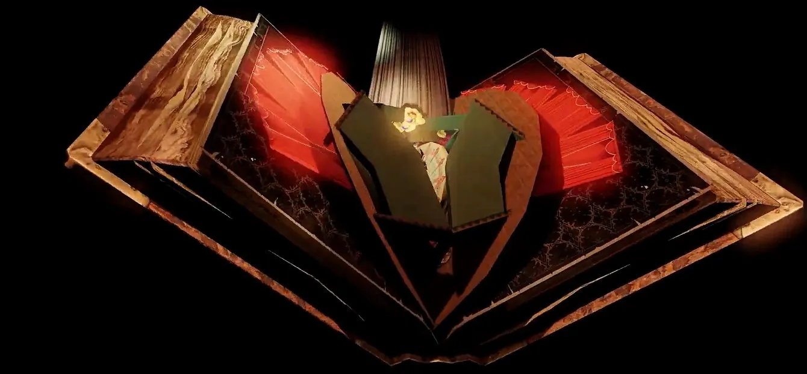
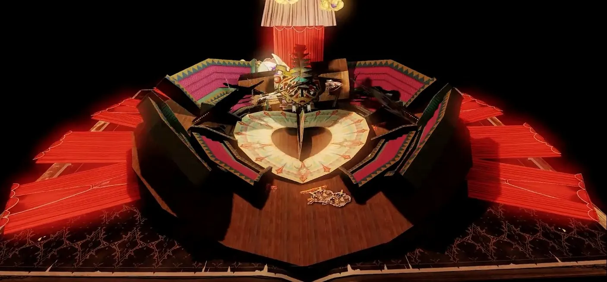
원작 쿠크세이튼 티저의 팝업북 장면으로, 기획서 25쪽에 넣은 참고 장면입니다. 제안은 이 연출로 콘텐츠를 엽니다. © Smilegate RPG
경일게임아카데미 콘텐츠/레벨 기획 평가 과제로 혼자 쓴 기획서입니다
2026.06 – 07, 개인 과제. 원작 레이드를 분석해 문제를 정하고, 새 협동 콘텐츠로 답했습니다.
제가 한 일
- 원작 레이드 분석과 문제 정의
- 기믹 풀, 변주 축, 재시도 규칙 설계
- 초안에서 최종본으로 판단 세 가지 수정
- 기획서 29쪽 작성
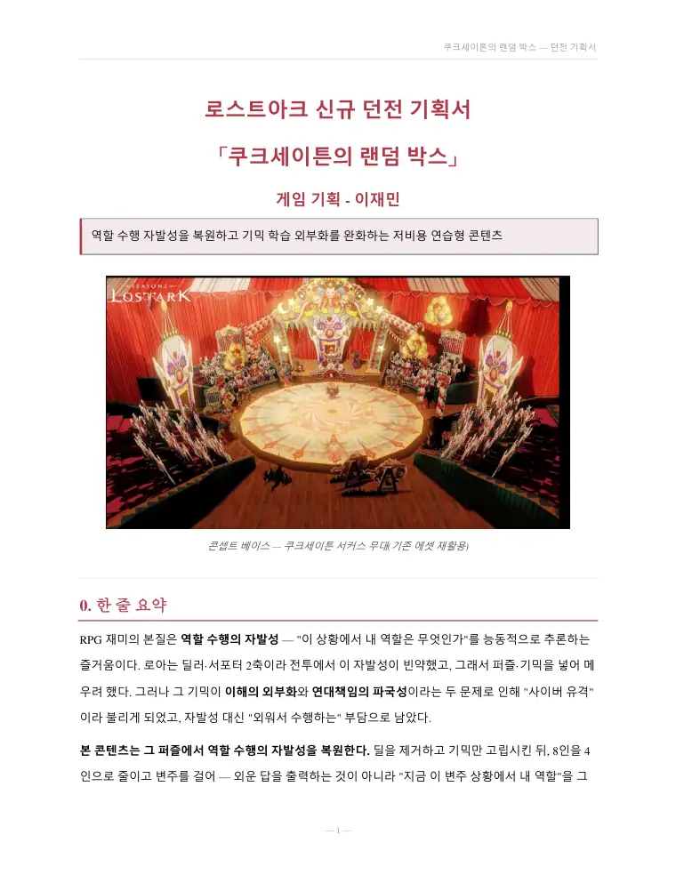
기획서 원문 29쪽 열기 ↗PDF, 2026.07외운 절차를 틀리지 않는 부담을, 역할을 스스로 판단하는 재미로 바꾸는 협동 콘텐츠 설계
- 분석협동 기믹이 외운 절차의 부담으로
- 기준손실은 줄이고 판단할 이유는 남긴다
- 방향익힌 기믹을 새 배치로, 실패하면 그 기믹부터
- 제안박스마다 기믹 2~4개, 순서는 무작위
- 다듬기초안에서 최종본으로, 판단 세 가지를 고침
- 결과29쪽 기획서, 구현한다면 확인할 것
협동하라고 만든 기믹이, 외운 절차를 틀리면 안 되는 부담이 됐습니다
신호와 정답 사이에 이유가 보이지 않으면 공략을 따로 외워야 하고, 틀릴까 봐 익숙한 절차만 따르게 됩니다.
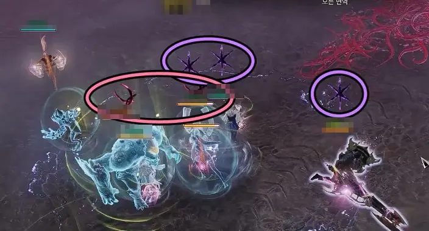
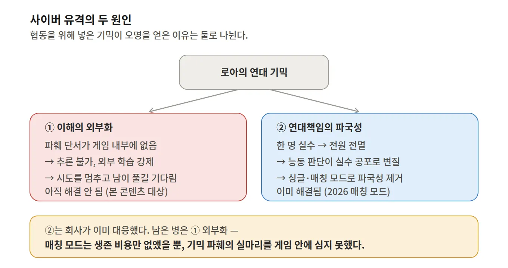
근거와 범위
‘패턴이 시작됐다’는 전조(식별 단서)와 ‘그래서 무엇을 해야 하는가’(대응 단서)는 다릅니다. 전조를 알아봐도 색과 이동 순서가 왜 이어지는지 모르면 정답표를 외워야 합니다.
진단의 근거는 공략 영상, 기사, 공식 발표입니다.
실패의 손실은 줄이고, 스스로 판단할 이유는 남기기로 했습니다
카오스 던전보다 동료와 맞출 일은 많고, 가디언 토벌보다 실패 부담은 낮은 자리를 목표로 했습니다.
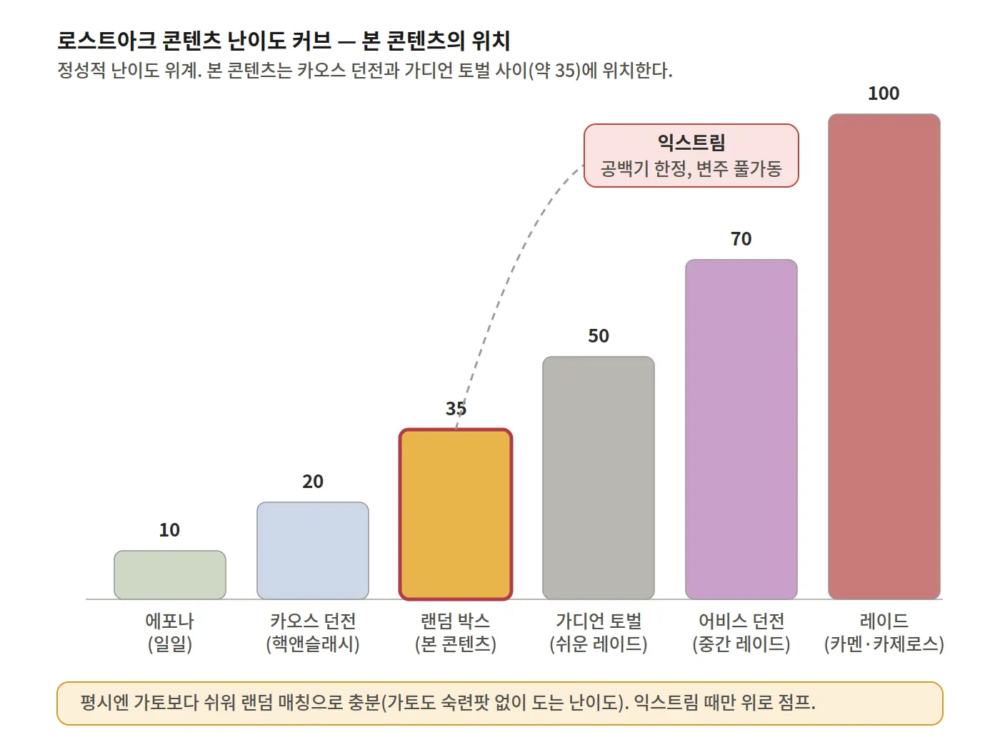
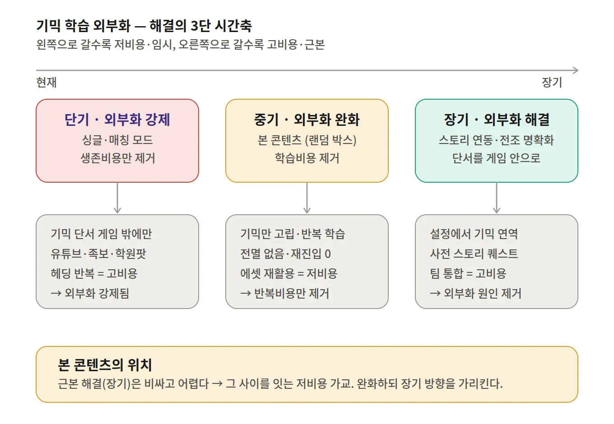
장기 처방과 범위를 나눈 이유
장기 처방은 보스의 설정과 사전 퀘스트로 대응을 추론하게 하는 것입니다. 보스 설정, 퀘스트, 연출, 패턴의 학습 순서를 함께 바꿔야 해서 기존 레이드에 바로 적용하기 어렵습니다.
그동안 공략을 익히며 쌓인 지식을 다시 쓸 자리가 랜덤 박스입니다. 첫 학습의 외부 공략 의존이나 ‘더 퍼스트’의 정보 비공개를 직접 없애지는 않습니다.
익힌 기믹을 새 배치와 순서로 만나고, 실패하면 그 기믹부터 다시 합니다
딜 누적은 빼고, 막이 바뀔 때마다 암전으로 보스의 무대를 갈아 끼웁니다.
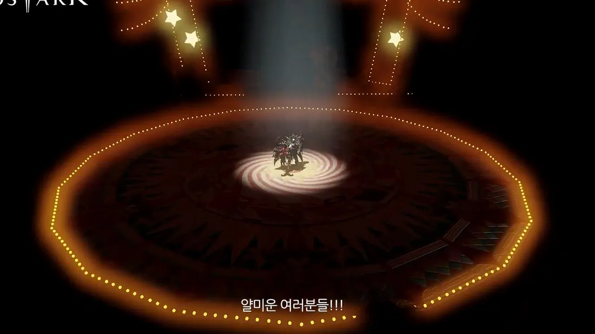
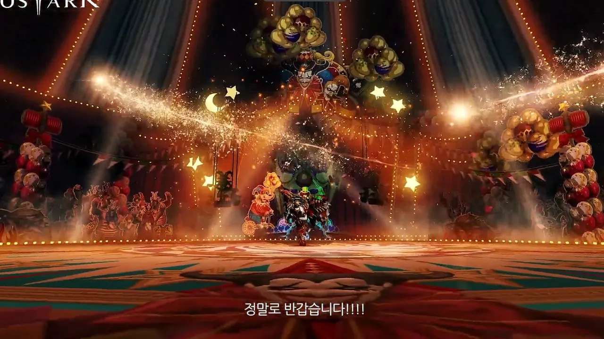
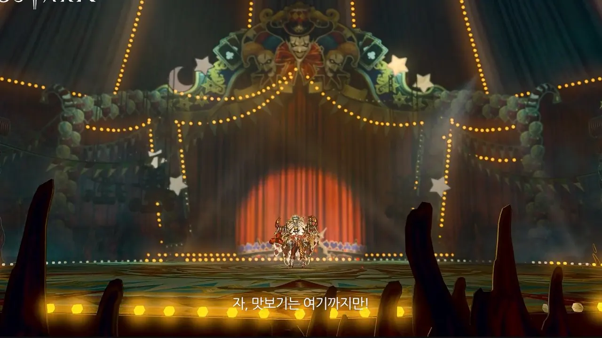
〈로스트아크〉 원작의 쿠크세이튼 연출을 캡처한 화면으로, 기획서 26쪽에 넣은 참고 장면입니다. © Smilegate RPG
변주가 다시 외울 거리가 되지 않게
바꾸는 것은 배치와 정보 분포, 동료의 대응 상황입니다. 이미 배운 신호와 정답의 관계를 새 단서 없이 뒤집지 않습니다.
카운터 간격은 대응할 수 있는 사람을 남기고, 복합 기믹은 서로 모순되는 안전 행동을 요구하지 않아야 합니다.
주간 완료 보상을 제안했지만, 보상의 필수성과 소요 시간이 또 하나의 숙제가 되지 않게 조정해야 합니다. 강한 변주와 기록 경쟁은 레이드 공백기 이벤트 ‘익스트림’으로 뗐습니다.
박스를 열 때마다 기믹 2~4개가 다른 순서로 나옵니다
기획서의 규칙대로 박스를 열어 봅니다. 실패하면 그 기믹부터 다시 합니다.
- 주사위쿠크세이튼이 던짐
- 박스보스 등장
- 암전무대를 보스 지형으로
- 기믹2~4개, 순서 무작위
- 암전철거하고 새 박스
기믹 풀 6종입니다. 칩은 그 기믹에 걸 수 있는 변주 축입니다.
- 안밖발탄, 암기형
몸이 빛나면 안, 도끼 끝이 빛나면 밖
V1V4V6
V2, V3 불가 - 카운터 돌진발탄, 피지컬형 바닥 3연타 뒤 방향 고정 V4
- 보접빨핀비아키스, 이해형 표식 색 다수결 + 그림자 날개 상태 V1V2V3V4V6
- 빨강 / 파랑발탄, 이해형 보스 버프 창의 색 V2
- 강하 대 지형파괴발탄, 피지컬 + 이해 같은 점프, 준비 자세의 작은 차이 V4
- 중첩복합 두 전조가 동시에, 어느 두 기믹인지는 원문에 없음 V5
- V1 공간
- “3시로 가”
- V2 색, 기호
- “보라 먼저”
- V3 순서, 짝
- “A→B→C 순”
- V4 횟수, 연쇄
- “1번이면 끝”
- V5 중첩
- “하나씩 온다”
- V6 공간 변형
- “맵은 그대로”
뽑는 규칙
따옴표는 그 변주가 깨뜨리는 외운 답입니다(기획서 6.2 표). 기획서는 박스마다 보스 한 명을 두었지만, 지금의 기믹 풀(발탄 4, 비아키스 1, 복합 1)로는 보스별로 2~4개를 채울 수 없어 이 시뮬레이션은 6종 전체에서 뽑습니다.
초안에서 최종본으로 고치며, 판단 세 가지를 바꿨습니다
연습장과 부딪히는 경쟁 장치, 잘못 줄인 원작 규칙, 원작에서 확인되지 않은 기믹을 덜어냈습니다.
초안
제한 시간 안에 점수를 쌓는 ‘단체 줄넘기’
최종본
평시는 클리어만 남기고, 랭킹은 공백기 이벤트로
평시의 목적은 모르는 동료에게 설명하며 맞추는 연습장인데, 시간과 순위가 그 여유를 빼앗았습니다.
초안, 같은 색 찾기
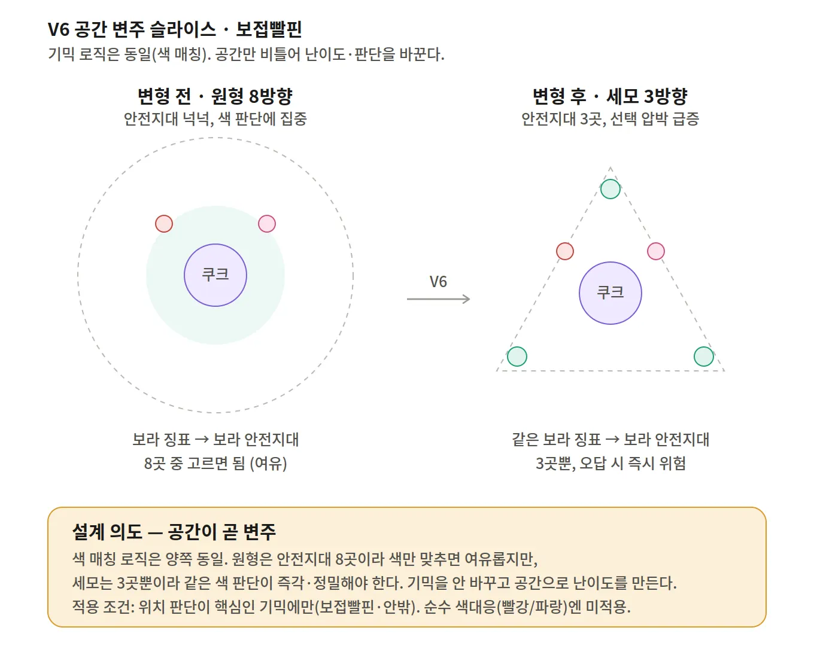
최종본, 다수 색 + 날개 상태
표식 색의 다수결(3 대 2)과 그림자 날개 상태를 함께 알아야 이동 순서가 나옵니다. 보라가 많으면 접은 날개부터, 빨강이 많으면 핀 날개부터입니다.
원작 규칙은 실제 화면과 대조한 뒤에 도식으로 옮깁니다. 이 순서를 지키지 않아 틀린 도식을 그렸습니다.
초안, 7종
최종본, 6종
검빨 구슬을 빼고, 보접빨핀에서 V5를 뺐습니다.
초안에 검빨 구슬은 ‘원전 세부 신뢰도가 낮다’고 적어 두었습니다. 원작에서 확인되지 않은 규칙을 섞으면, 변주가 원작과 다른 답을 가르칩니다.
평가 과제로 29쪽 기획서를 냈습니다
기획서 원문은 PDF로 열어 볼 수 있습니다 ↗ 아래 표는 구현한다면 플레이로 확인할 것입니다.
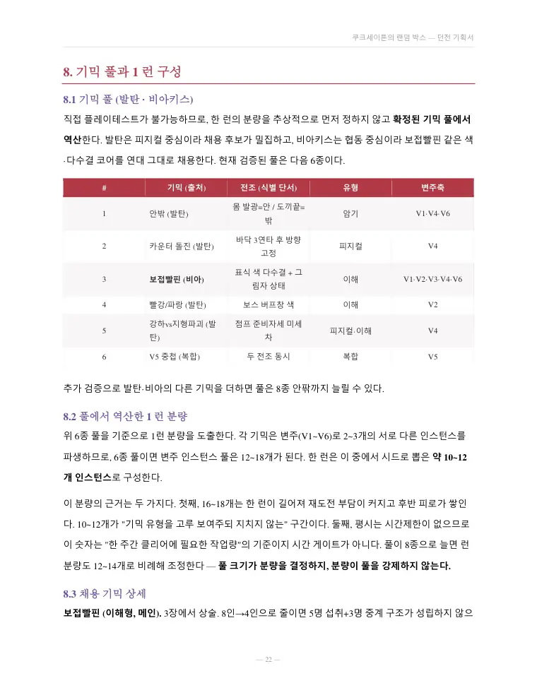
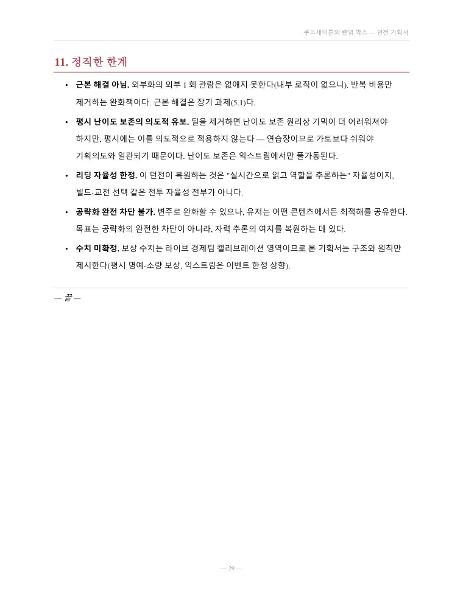